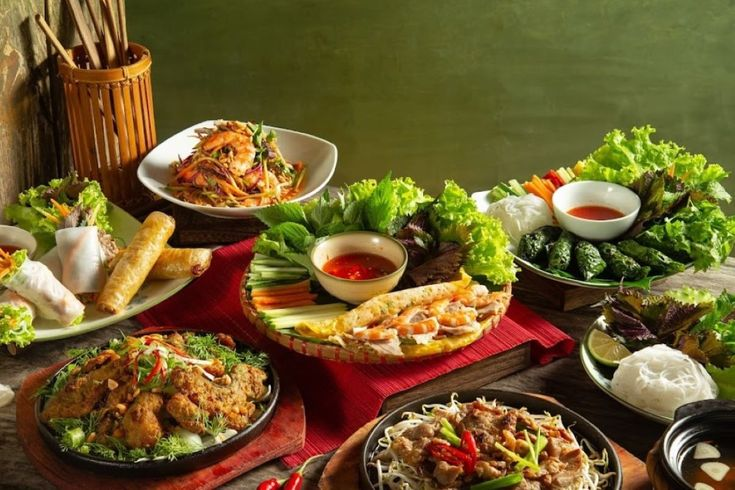
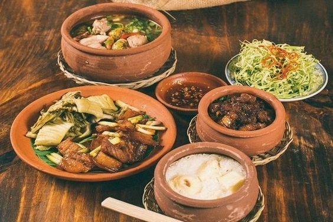

VIETNAMFOOD
VIETNAMFOOD
VIETNAMFOOD
VIETNAMFOOD
3/2/2024 15:27 GMT+7
Ẩm thực Việt Nam là cách gọi của phương thức chế biến món ăn, nguyên lý pha trộn gia vị và những thói quen ăn uống nói chung của cộng đồng người Việt và các dân tộc thuộc Việt trên đất nước Việt Nam. Tuy có ít nhiều sự khác biệt, ẩm thực Việt Nam vẫn bao hàm ý nghĩa khái quát nhất để chỉ tất cả những món ăn phổ biến trong cộng đồng các dân tộc thiểu số nhưng đã tương đối phổ thông trong cộng đồng người Việt.

Trong văn hóa Việt Nam, ăn uống là cả một nghệ thuật, nó không chỉ nhằm đáp ứng yêu cầu cơ bản của con người mà còn có mối quan hệ mật thiết đến lối sống, truyền thống dân tộc, được thể hiện rất rõ qua những dụng cụ được dùng trong bữa ăn, cách ứng xử với mọi người trong khi ăn. Vì thế việc ăn uống còn minh chứng cho lịch sử và sự hình thành nền văn hoá của Việt Nam. Các món ăn qua từng giai đoạn nói lên được cuộc sống, con người của giai đoạn đó và của vùng đất – nơi đã sản sinh ra mỗi món ăn.
Việt Nam là một nước thiên về nông nghiệp thuộc đới khí hậu nhiệt đới, vùng nhiệt đới gió mùa. Ngoài ra, lãnh thổ Việt Nam được chia ra ba miền rõ rệt là Bắc, Trung, Nam. Chính các đặc điểm về địa lý, văn hóa, dân tộc, khí hậu đã quy định những đặc điểm riêng của ẩm thực từng vùng – miền. Mỗi miền có một nét, khẩu vị cách chế biến đặc trưng. Điều đó góp phần làm ẩm thực Việt Nam phong phú, đa dạng. Nền văn minh lúa nước của Việt Nam khiến rất nhiều món ăn và nguyên liệu nấu ăn có nguồn gốc từ lúa gạo (khác với cây lúa mì hoặc lúa mạch, ngũ cốc như các vùng khác). Đây là một văn hóa ăn uống sử dụng rất nhiều loại rau (luộc, xào, làm dưa, ăn sống); nhiều loại nước canh đặc biệt là canh chua, trong khi đó số lượng các món ăn có dinh dưỡng từ động vật thường ít hơn. Những loại thịt được dùng phổ biến nhất là thịt lợn, bò, gà, ngan, vịt, các loại tôm, cá, cua, ốc, hến, trai, sò,... Những món ăn chế biến từ những loại thịt ít thông dụng hơn như thịt lợn, thịt dê, thịt trâu. Các loại thịt rùa, thịt rắn,ba ba Việt Nam đã cấm săn bắn, giết mổ thịt thú rừng, còn thịt chuột chỉ một ít người dân sử dụng làm thực phẩm... thường không phải là nguồn thịt chính, nhiều khi được coi là đặc sản và chỉ được sử dụng trong một dịp liên hoan nào đó với rượu uống kèm. Người Việt cũng có một số món ăn chay theo đạo Phật hoặc mục đích khác được chế biến từ các loại thực vật, không có nguồn thực phẩm từ động vật. Tuy nhiên, trong cộng đồng thì lại có ít người ăn chay trường, chỉ có các sư thầy trong các chùa hoặc người bị bệnh nặng buộc phải ăn kiêng.
Một đặc điểm ít nhiều cũng phân biệt với một số nước khác: ẩm thực Việt Nam chú trọng ăn ngon tuy đôi khi không đặt mục tiêu hàng đầu là ăn bổ. Bởi vậy trong hệ thống ẩm thực người Việt ít có những món hết sức cầu kỳ, hầm nhừ ninh kỹ như ẩm thực Trung Hoa, cũng không thiên về bày biện có tính thẩm mỹ cao độ như ẩm thực Nhật Bản, mà thiên về phối trộn gia vị một cách tinh tế để món ăn được ngon, hoặc sử dụng những nguyên liệu dai, giòn thưởng thức rất thú vị dù không thực sự bổ béo (ví dụ như các món măng, chân cánh gà, phủ tạng động vật...).
Trong thực tế, nhiều người nhận thấy, một cách cảm tính, đặc trưng ẩm thực Việt Nam toát lộ trong sự đối sánh với các nền văn hóa ẩm thực khác trên thế giới: món ăn Trung Hoa ăn bổ dưỡng, món ăn Việt ăn ngon miệng, món ăn Nhật nhìn thích mắt. Tuy nhiên, đặc điểm này ngày càng phai nhòa trong thời hội nhập.

Khi khách hàng cần chúng tôi sẽ có mặt

Hỗ trợ thanh toán online qua Ví điện tử

Thông tin chính xác, kịp thời, đầy đủ
GIỚI THIỆU
QUẢNG CÁO
CHÍNH SÁCH BẢO MẬT
LIÊN HỆ
©2024